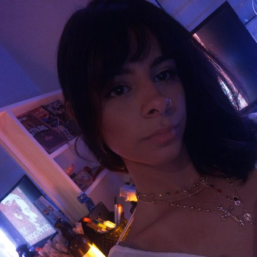
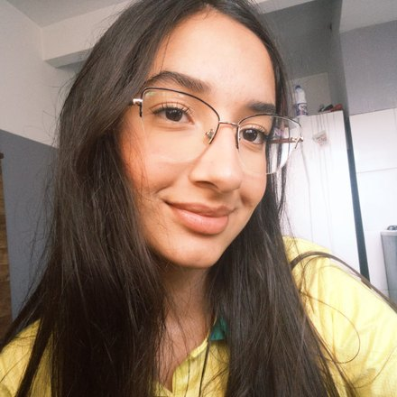
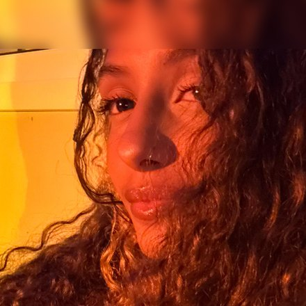
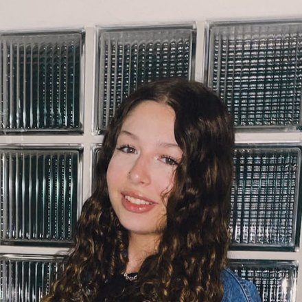

ilustração
um punhado de neurônios e as ligações entre eles
Plasticidade estrutural
O cérebro muda as peças: forma e elimina sinapses, cria ramificações novas e, em regiões como o hipocampo, até neurônios novos.
Um laboratório digital para entender neurônios, sinapses, química cerebral e comportamento — explore o cérebro em 3D, monte moléculas e teste seus conhecimentos no Desafio Neural.
Neuroplasticidade
A cada experiência, repetição ou lesão, o sistema nervoso muda a própria estrutura. Não é força de expressão: sinapses aparecem, engrossam, enfraquecem e desaparecem enquanto você aprende.
Toda repetição dispara o mesmo caminho. O que é disparado junto se fortalece — é a potenciação de longo prazo. O que fica parado é eliminado na poda sináptica, porque manter conexão sem uso custa energia.
desenho esquemático — não é a aparência real de um neurônio
um punhado de neurônios e as ligações entre eles
O cérebro muda as peças: forma e elimina sinapses, cria ramificações novas e, em regiões como o hipocampo, até neurônios novos.
o contorno é um cérebro visto de lado, com o cerebelo atrás
As mesmas peças trocam de função: quando uma área é lesionada, áreas vizinhas assumem parte do trabalho que era dela.
Passada a janela ainda dá para aprender — só exige muito mais repetição para chegar no mesmo lugar.
Anos de treino deixam as áreas motoras e auditivas mensuravelmente maiores do que a média.
Decorar uma cidade inteira por anos está associado a um hipocampo maior — a região da memória espacial.
A recuperação vem de repetição intensiva: é ela que força o cérebro a redistribuir a função perdida.
Toda sensação, decisão ou emoção depende de uma cascata elétrica e química acontecendo em milissegundos. Clique nos elementos do diagrama ao lado.
Quando um neurônio dispara, um potencial de ação percorre seu axônio até o terminal sináptico. Ali, canais de cálcio se abrem, e vesículas cheias de neurotransmissores se fundem com a membrana, liberando essas moléculas na fenda sináptica.
O neurotransmissor atravessa esse espaço microscópico e se liga a receptores no neurônio seguinte — o que pode excitar ou inibir esse segundo neurônio. Em seguida, o sinal é encerrado por recaptação ou por enzimas que degradam a molécula.
Quando uma sinapse é ativada repetidamente, ela libera mais neurotransmissor e cria mais receptores — a base química da potenciação de longo prazo citada na aba de neuroplasticidade.
clique na vesícula, na fenda ou no receptor
esquema ilustrativo da sinapse — fora de escala
Ligada à motivação, recompensa e controle do movimento. Envolvida no vício e reduzida no Parkinson.
Regula humor, sono e apetite. É o principal alvo dos antidepressivos ISRS.
Principal neurotransmissor inibitório — reduz a excitabilidade neuronal. Alvo de ansiolíticos.
Principal neurotransmissor excitatório. Essencial para aprendizado, memória e potenciação de longo prazo.
Envolvida em memória, atenção e contração muscular. Reduzida em pacientes com Alzheimer.
Comanda o estado de alerta e a resposta de "luta ou fuga" diante de ameaças.
Escolha um neurotransmissor para ver sua estrutura química simplificada — ou ative o modo comparação para ver dois lado a lado.
Selecione um neurotransmissor acima para ver o modelo molecular.
estruturas simplificadas e meramente ilustrativas — não estão em escala
Sistema límbico
Antes de você "pensar" sobre um perigo, uma rede de estruturas mais antigas do cérebro já reagiu a ele.
O neurocientista Joseph LeDoux descreveu duas rotas para o medo: a via rápida, direto até a amígdala, e a via lenta, que passa pelo córtex para uma avaliação mais racional.
Em estresse, o hipotálamo aciona o eixo HPA, liberando cortisol. O córtex pré-frontal normalmente regula a amígdala — mas sob estresse extremo essa regulação enfraquece.
Um som inesperado chega ao cérebro e segue por dois caminhos.
clique nos nomesPrimeiro você se assusta. Depois entende o que aconteceu.
Detecta ameaças e atribui carga emocional às experiências, muitas vezes antes da consciência processar a situação.
Liga emoção e contexto à memória — por isso lembramos com mais força de momentos emocionalmente intensos.
Monitora conflitos entre emoção e razão, ajudando a regular impulsos e reações.
Panorama
"Neurociência" não é uma área só — é um conjunto de disciplinas que estudam o sistema nervoso em escalas diferentes.
Estuda como o cérebro produz memória, atenção, linguagem e tomada de decisão.
Usa modelos matemáticos e simulações para entender como circuitos neurais processam informação.
Investiga neurônios, genes e moléculas — a base física da plasticidade sináptica.
Aplica esse conhecimento ao diagnóstico e tratamento de doenças neurológicas e psiquiátricas.
Relaciona circuitos cerebrais a comportamentos observáveis, de reflexos a decisões complexas.
Explora como o cérebro processa emoções, empatia e interações entre pessoas.
Estuda como o sistema nervoso se forma e amadurece, da gestação à velhice.
Cria interfaces cérebro-máquina, próteses neurais e dispositivos que leem ou estimulam a atividade cerebral.
Modelo 3D anatômico real, direto na página — arraste para girar e clique nos pontos brilhantes para abrir os detalhes de cada região, sem sair desta aba.
modelo meramente ilustrativo — as marcações indicam a posição aproximada de cada região
Jogo educativo
Você foi encolhido e entrou dentro de uma mente humana. Para sair, precisa atravessar cinco regiões do cérebro — percorrendo a rede neural, testando a memória, enfrentando os processos automáticos, reconhecendo emoções e, no fim, decidindo.
Clique dentro do quadro para jogar · use o mouse ou o teclado · use o botão expandir no canto do quadro
Créditos
Escolhemos os assuntos, escrevemos os textos, montamos o cérebro em 3D, desenhamos o jogo — e refizemos quase tudo o que não funcionou na primeira vez.





Nada aqui foi feito por um cérebro sozinho — que é, no fundo, o argumento do site inteiro.